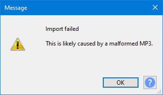
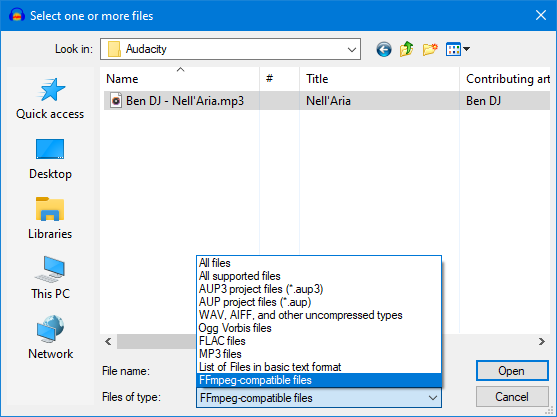
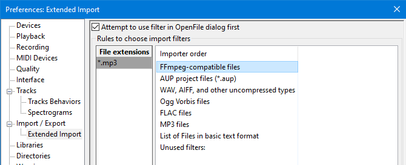

Opening malformed MP3 files
Unfortunately we subsequently discovered that malformed MP3s are rather common, and received numerous reports of MP3s failing to import.
In recent versions of Audacity the error checking has been toned down so that most MP3s will still import even if they contain small errors. Unfortunately a small number of malformed MP3s are sufficiently damaged that they still get caught by the error checking.
Turning off error checking entirely would be dangerous.
Contents
- Malformed MP3 error message
- Workaround-1 - using the libmad audio decoder
- Workaround-2 - using the FFmpeg audio decoder
Malformed MP3 error message
Sometimes when trying to import an MP3 file you may see the following message:
- 
This indicates that Audacity's default MP3 importer ("libmad") detected an error in the file.
So the question is: How does one import a "slightly faulty" MP3 that plays in other applications, but is rejected by Audacity's default MP3 importer?
The answer is: Import it with FFmpeg instead of importing with libmad.
Workaround-1 - using the file type filter
In the dialog, select "FFmpeg compatible files" as the file type choice filter. See: importable file-types.
- 
Because "FFmpeg compatible files" has been selected, only files that are supported by FFmpeg appear in the file browser, and on selecting a file and clicking the button, Audacity will attempt to open the file using FFmpeg.
The benefit of doing it this way is that you will still be able to import properly formed MP3s using libmad, by setting the file type choice filter to "All files", "All supported files" or "MP3 files". This has the benefit that ID3 metadata tags are better supported than when using FFmpeg.
Workaround-2 - using Extended Import rules
This is probably the more convenient method for most users, because you can set it and forget it.
| If you use Metadata tags, see "Limitations" below. |
- Ensure that the FFmpeg library is installed.
- Click the button
- Type: *.mp3 in the "File Extensions" column.
- Drag "FFmpeg compatible files" to the top of the "Importer order" column,
or click on "FFmpeg compatible files" and then use the button repeatedly to move it to the top. - De-select (un-check) "Attempt to use filter in OpenFile dialog first"
- Click the button
- 
- When enabled, if you select "MP3 files" as the file type filter in the Import (or "open") file browser, then Audacity will attempt to use libmad to import the selected file, and if the selected file is one of these "faulty" MP3 files, then you will see the malformed MP3 error message.
- When disabled not selected), then the custom "Extended Import" rules apply regardless of the file browser file type filter setting. FFmpeg will always be used for MP3 files.
Limitations
- All MP3 files will always be imported in future with FFmpeg, so "Artist" and "Year" tags will not be imported.
- FFmpeg does not support Metadata as well as libmad. It misses out the "Artist" and "Year" tags, while libmad supports all of Audacity's metadata fields.